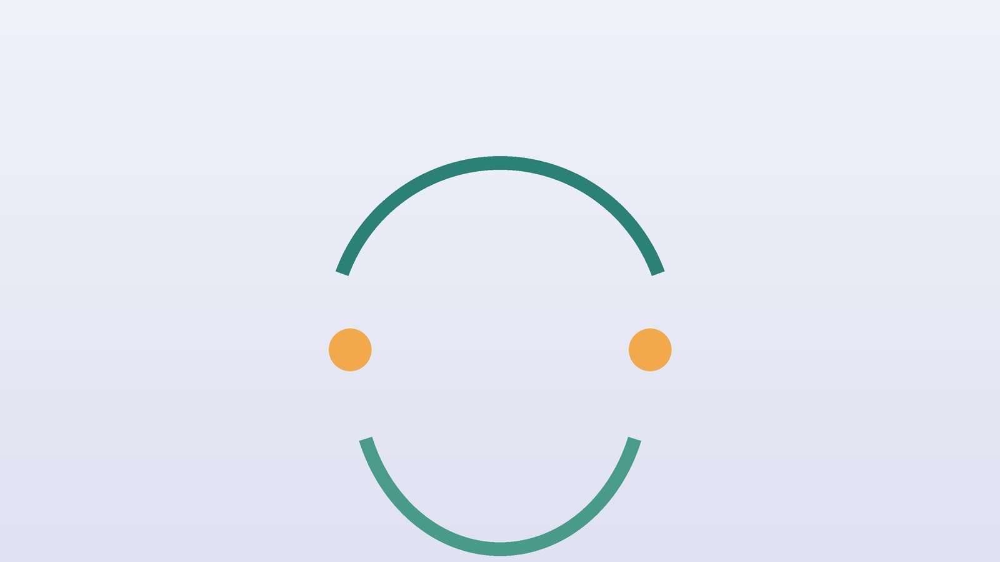

건강 칼럼 · 인천 턱관절 한의원
입을 벌릴 때마다 딱딱 소리가 난다면, 턱관절장애 한방 치료

턱관절장애 자가 점검
- 입을 벌리거나 다물 때 딱딱, 사각사각 소리가 난다
- 하품하거나 딱딱한 음식을 씹을 때 턱이 아프다
- 아침에 일어나면 턱과 관자놀이가 뻐근하다
- 입이 손가락 세 개만큼 벌어지지 않는다
- 귀가 먹먹하거나 귀 앞쪽이 아프다
- 낮에 나도 모르게 이를 꽉 물고 있다
이 체크리스트는 진단 도구가 아니라 상담이 필요한지 가늠해 보는 참고용입니다.
턱관절장애는 왜 생기나요?
미국 국립치과두개안면연구소(NIDCR)는 턱관절장애(TMD)를 턱관절과 턱을 움직이는 근육에 통증과 기능 이상이 생기는 여러 질환을 묶어 부르는 말로 설명하며, 많은 경우 시간이 지나며 좋아지고 간단한 자가 관리와 보존적 치료가 우선이라고 안내합니다.
낮에 이를 꽉 무는 습관, 밤의 이갈이, 한쪽으로만 씹는 습관, 턱을 괴는 자세가 흔한 원인입니다. 스트레스가 많은 시기나 집중해서 일할 때 자신도 모르게 이를 물고 있는 분들이 많아 직장인과 수험생에게 자주 보입니다. 소리만 나고 아프지 않다면 지켜봐도 되는 경우가 많지만, 통증과 입 벌림 제한이 있다면 치료가 필요합니다.
한의학은 턱을 어떻게 보나요?
턱과 얼굴 옆으로는 위경(胃經)과 담경(膽經), 삼초경(三焦經)이 지나갑니다. 한의학에서는 이 경락들의 흐름이 막히면 턱의 움직임이 뻑뻑해지고 통증이 생긴다고 보았고, 입이 벌어지지 않는 증상을 구금(口噤)이라 불렀습니다.
특히 담경은 관자놀이와 귀 주변을 돌아 내려와, 턱관절장애에서 관자놀이 두통과 귀 먹먹함이 함께 나타나는 것을 이 경락의 연결로 설명합니다. 그래서 턱만이 아니라 관자놀이, 귀, 목을 함께 풀어 주는 것이 한방 치료의 특징입니다.
나는 어떤 유형일까?
1. 간기울결(肝氣鬱結) 긴장해서 이를 무는 유형
- 이런 분에게 많아요
- 스트레스가 많고 집중할 때 이를 꽉 무는 분
- 나타나는 모습
- 아침에 턱과 관자놀이가 뻐근하고 이갈이가 있다
- 함께 오는 몸의 신호
- 두통, 목·어깨 결림, 예민함
- 진찰에서 보이는 모습
- 맥이 팽팽함
- 치료 방향
- 긴장을 풀어 주는 방향 (억간산·시호가용골모려탕 계열)
- 오늘부터 해 볼 것
- 입술은 다물되 위아래 치아는 살짝 떨어뜨리는 연습을 하세요.
2. 풍한(風寒) 찬 바람에 굳는 유형
- 이런 분에게 많아요
- 찬 바람을 맞은 뒤 턱이 뻣뻣해진 분
- 나타나는 모습
- 턱이 굳어 입이 잘 안 벌어지고 따뜻하면 풀린다
- 함께 오는 몸의 신호
- 얼굴 한쪽 뻣뻣함, 오한
- 진찰에서 보이는 모습
- 설태가 흼
- 치료 방향
- 찬 기운을 풀고 근육을 이완하는 방향 (갈근탕 계열)
- 오늘부터 해 볼 것
- 따뜻한 수건으로 턱을 데운 뒤 천천히 입을 벌려 보세요.
3. 기혈부족(氣血不足) 오래되어 약해진 유형
- 이런 분에게 많아요
- 증상이 오래되고 쉽게 지치는 분
- 나타나는 모습
- 은근히 아프고 오래 씹으면 피곤하다
- 함께 오는 몸의 신호
- 무기력, 어지러움
- 진찰에서 보이는 모습
- 혀가 창백하고 맥이 약함
- 치료 방향
- 근육을 기르고 통증을 줄이는 방향 (작약감초탕 가미)
- 오늘부터 해 볼 것
- 딱딱하고 질긴 음식을 피하세요.
한의원에서는 어떻게 진찰하나요?
- 입 벌림 측정: 입이 얼마나 벌어지는지, 벌릴 때 턱이 한쪽으로 치우치는지 확인합니다.
- 소리와 통증: 관절 소리의 시점과 통증 부위를 확인합니다.
- 근육 촉진: 씹는 근육, 관자놀이 근육, 목 근육의 압통점을 찾습니다.
- 습관 문진: 이갈이, 이악물기, 한쪽 씹기, 턱 괴기, 수면 자세를 여쭙니다.
침·약침·한약 치료는 어떻게 하나요?
1. 침 치료
- 하관(下關): 귀 앞 광대뼈 아래, 입을 다물면 오목한 곳. 턱관절의 대표 혈입니다.
- 협거(頰車): 어금니를 물면 볼록해지는 씹는 근육 위.
- 청궁(聽宮): 귀 앞 입을 벌리면 오목해지는 곳.
- 태양(太陽): 관자놀이.
- 합곡(合谷): 손등 엄지와 검지 사이.
2. 약침·초음파 가이드 약침
약침은 일반 약침과 초음파 가이드 약침을 모두 시행하며, 아픈 부위의 깊이와 주변 구조에 따라 진찰 후 골라 씁니다. 초음파 가이드 약침은 초음파 화면으로 바늘 끝을 확인하면서 놓는 방식입니다. 턱관절 원판과 씹는 근육을 초음파로 확인하면서 약침을 놓습니다. 씹는 근육과 관자놀이 근육의 단단한 압통점에 약침을 적용해 근육 긴장과 염증을 완화합니다.
3. 한약
이악물기와 긴장이 두드러지면 마음과 근육을 함께 이완하는 처방, 근육 경련성 통증이 있으면 작약감초탕 계열을 바탕으로 체질에 맞게 처방합니다.
4. 치과 치료와 함께
이갈이가 심하거나 치아가 닳고 있다면 치과에서 구강 내 장치(스플린트) 등을 상의하는 것이 좋습니다. 한방 치료는 장치 치료와 함께 근육의 긴장과 통증을 줄이는 방향으로 진행합니다.
원장님이 네이버 블로그에 진료 이야기와 건강 정보를 꾸준히 올리고 있습니다. 더 많은 이야기는 블로그에서 확인해 보세요.
블로그 보기치료는 어떤 순서로 진행되나요?
- 첫 진료 입 벌림과 통증을 기록하고 유형을 정합니다.
- 1~4주차 주 1~2회 침 치료와 약침으로 통증과 근육 긴장을 줄입니다.
- 5~8주차 입 벌림이 좋아지면 간격을 늘리고 습관 교정에 집중합니다.
- 유지기 스트레스가 큰 시기에 맞춰 관리합니다.
기간과 횟수는 증상이 얼마나 오래되었는지, 동반 증상이 무엇인지에 따라 달라지며, 진찰 후 개인별로 안내합니다.
턱을 편하게 하는 생활 습관
- 편한 턱 자세: 입술은 다물되 위아래 치아는 살짝 떨어뜨립니다. 혀끝은 윗니 뒤 입천장에 가볍게 둡니다.
- 음식: 오징어, 껌, 딱딱한 견과류처럼 오래 씹는 음식을 줄이고, 양쪽으로 고르게 씹습니다.
- 습관: 턱을 괴거나 엎드려 자는 습관을 피합니다.
- 하품: 주먹으로 턱 아래를 가볍게 받쳐 입이 과하게 벌어지지 않게 합니다.
- 마사지: 따뜻한 수건으로 턱을 데운 뒤 하관혈과 협거혈 주변을 손가락으로 둥글게 풀어 줍니다.
다른 진료가 먼저인 경우
- 입이 갑자기 다물어지지 않거나 벌어지지 않으면 치과나 구강외과를 먼저 찾으세요.
- 턱 부기와 열이 함께 있으면 치아나 침샘 염증을 확인해야 합니다.
- 치아가 깨지거나 많이 닳았다면 치과 치료가 우선입니다.
자주 묻는 질문 Q&A
- Q1. 턱에서 소리만 나는데 치료가 필요한가요?
- 통증이나 입 벌림 제한이 없다면 생활 습관 관리로 지켜볼 수 있습니다.
- Q2. 턱관절장애가 두통이나 이명과 관련 있나요?
- 턱 근육의 긴장이 관자놀이 두통이나 귀 먹먹함과 함께 나타나는 경우가 있어 함께 살핍니다.
- Q3. 스플린트를 끼면서 침 치료를 받아도 되나요?
- 함께 받을 수 있습니다. 치과 치료 일정과 내용을 알려 주세요.
- Q4. 치료는 얼마나 걸리나요?
- 보통 2~4주 동안 주 1~2회 치료하며 통증과 입 벌림 정도의 변화를 확인합니다.
- Q5. 입이 갑자기 벌어지지 않아요.
- 관절 원판 문제일 수 있어 치과나 구강외과 진료를 먼저 받으세요.
- Q6. 이갈이도 치료할 수 있나요?
- 이갈이 자체는 치과 장치로 치아를 보호하고, 한방 치료로 근육 긴장과 수면의 질을 함께 관리합니다.
- Q7. 껌을 씹으면 턱 운동이 되지 않나요?
- 오히려 턱 근육을 혹사시킬 수 있어 증상이 있을 때는 피하세요.
- Q8. 아이도 턱관절장애가 생기나요?
- 청소년기에도 생길 수 있으며, 소리와 통증이 있다면 치과 진료로 먼저 확인하세요.
문원열 대표원장한의사 · 365스마일한의원
인천 서구 가정동 한자리에서 10년 넘게 진료하며, 환자 한 분 한 분의 아픔을 깊이 들여다보고 근본적인 원인을 찾는 진료를 지향합니다.
진료 안내
- 진료시간
- 평일 09:00~20:00 (점심시간 13:00~14:00)
토·일·공휴일 09:00~15:00 - 주소
- 인천광역시 서구 가경주로 46, 2층 (가정동)
인천2호선 가정중앙시장역 인근
영상으로 길 안내 보기 → - 주차
- 한의원 건물 바로 앞 1층 도원주차장
- 예약
- 예약 바로가기 또는 전화 예약
진료시간은 사정에 따라 바뀔 수 있으니 방문 전 전화로 확인해 주세요.
참고 자료
- National Institute of Dental and Craniofacial Research (NIDCR), TMD (Temporomandibular Disorders) — 원문
- 질병관리청 국가건강정보포털 — 원문
※ 이 글은 일반적인 건강 정보이며, 개인의 상태에 따라 치료 방법과 결과는 다를 수 있습니다. 정확한 진단과 치료는 진료를 통해 결정됩니다. 침·약침 시술 후 드물게 멍, 통증 등이 생길 수 있습니다.